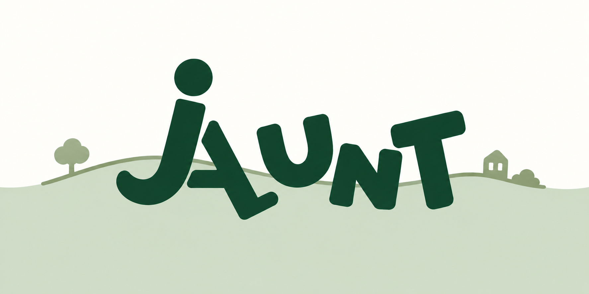

A topic in mind, or feeling spontaneous?
Choose Topic
Wild Jaunt
Landmarks or hidden gems? optional
Balanced
Well-knownHidden gems
One consolidated, definitive sequence replacing the scattered prior iterations: the launch splash (fixed so the big looping element is the full JAUNT wordmark, not an isolated Jarrod crop, and the redundant bottom badge is removed), the two Trip Setup opening screens, the two Topic Selection screens, and the "Ready for your Jaunt?" confirmation sheet. Screens 2-6 reproduce their already-approved source files exactly — same copy, same crops, same component sizing, "Wild Jaunt" wording unchanged.
